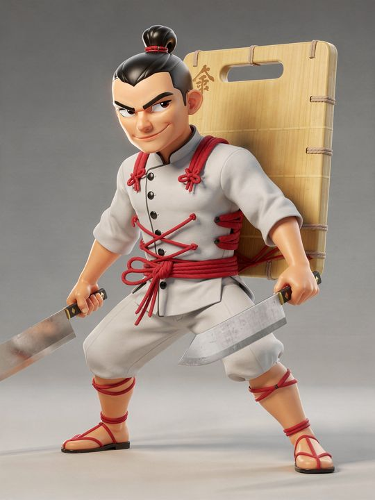
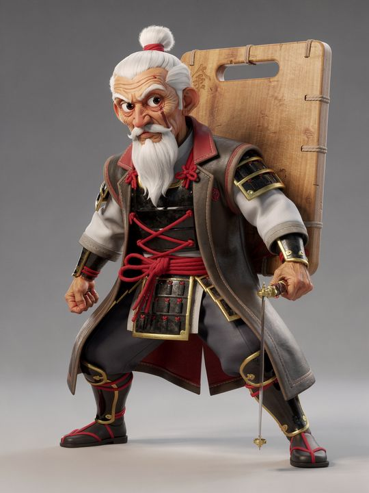
The sword droops a little these days. It happens to the best of us.
Unreal Engine developer & 3D artist. Real-time environments, virtual production, motion capture and scan-accurate digital twins. London & Brighton.
From LED volume stages to Vicon capture, all driven live in Unreal. Performances captured on the stage, then retargeted, lit and rendered in engine.
A London townhouse captured with LiDAR and Gaussian splatting, then rebuilt in Unreal. Hover over a room, or use its switch, to swap between the raw scan and the final render.
A working recycling plant, captured from the air and rebuilt in Unreal Engine. I flew the indoor drone capture through the live facility and turned it into survey-grade data. I then built the interactive twin and presented the film that went out on social.
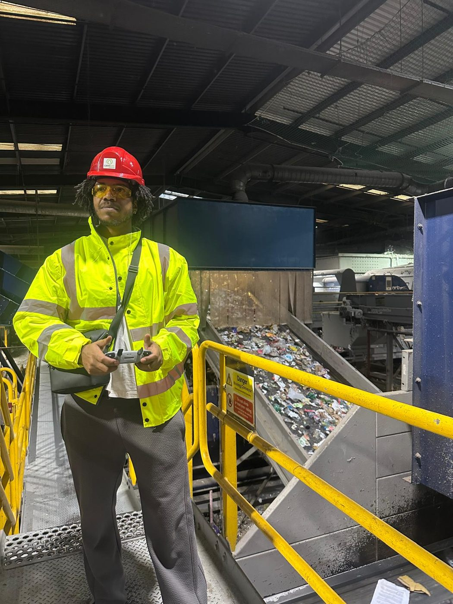
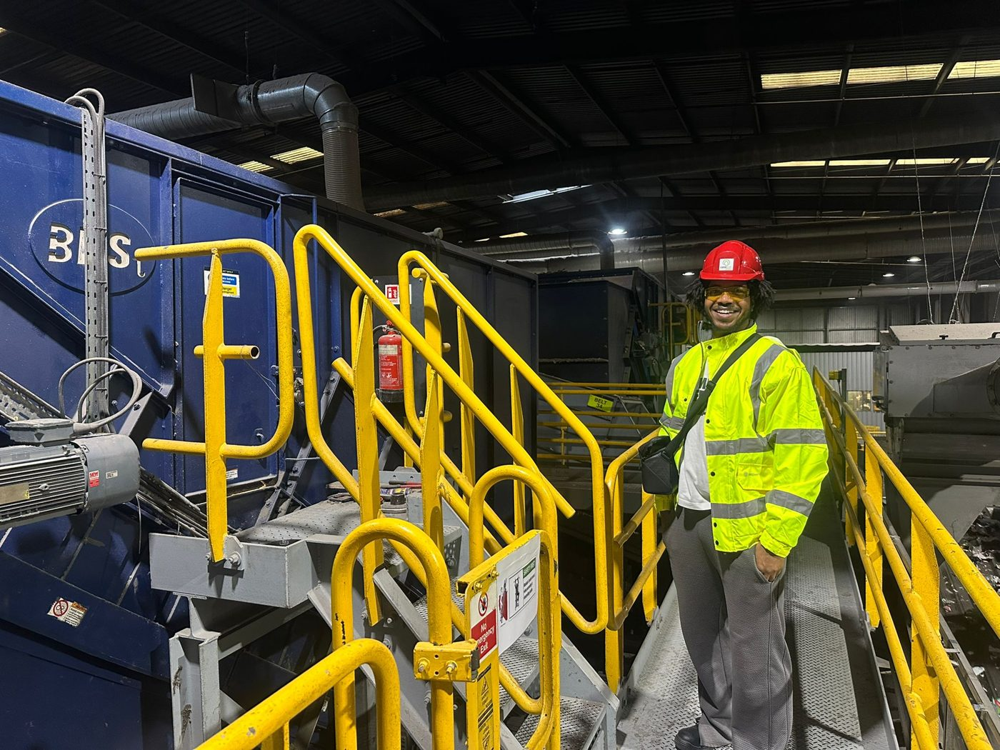
This wasn't an empty warehouse. I planned and flew every aerial shot indoors, between steel gantries, overhead ducting, safety netting and moving conveyors, while the plant was running.
Twin teaser · 00:35 · sound on
Drone and ground capture became survey-grade point cloud and mesh data, which I rebuilt as a real-time Unreal environment that runs in the browser. Each machine has a clickable hotspot that opens its specs, maintenance data and a short video cut from the aerial footage.
Blueprint UI and hotspot systems · Gaussian splatting · RealityCapture · live data over APIs and WebSockets · Pixel Streaming 2 for cloud delivery · published as a public case study by Volinga.
The client confirmed savings of about £10,000 a year. The twin replaced staffed onboarding and school visits, and cut the engineering callouts needed for routine measurements.
A 6-minute explainer that I produced and presented, filmed inside the facility. It walks through how the plant turns household recycling into material that can be sold. After it gained traction on LinkedIn, Recycle Now asked to use the content on their own channels.
Four years in industry since 2022, after a BSc (Hons) in 3D VFX from Escape Studios.
Virtual production director. The piece was funded with £20,000 from the HI3 Network and shot as a single continuous take with three Butoh performers.
Aximmetry operator at GDS Studio. I composited Unreal scenes live with camera sources and cut between sources, including in Dual Engine setups.
Matchmove supervisor and VAD (virtual art department) on the official music video.
Live stream engineer. Built a system that put online viewers' comments on the stage screen in real time.
VFX specialist technician. Taught Houdini and ran Vicon motion capture sessions and Shogun post-processing.
XR consultant to the chief creative officer, advising on content for large immersive screen environments.
3D artist at Selected Works. Cleaned up LiDAR-captured assets and set up Houdini lighting and simulation.
Unreal Engine 5: Blueprints, Niagara, Sequencer, Movie Render Queue, Pixel Streaming, performance optimisation
Vicon & Shogun, Mo-Sys tracking, LiDAR, photogrammetry, Gaussian splatting, RealityCapture, XGRIDS, Volinga
Houdini (pyro, RBD, particles), Maya, Nuke, Octane, Redshift; sculpting, retopology, texturing
Aximmetry (incl. Dual Engine), Disguise, OBS, NDI, SRT, RTMP
Python, JavaScript/Node, WebSockets, MCP tooling for Unreal, Git/Perforce, ffmpeg
Dashi Dodge is an original mobile endless-runner in Unreal Engine 5.8. It has five chefs, each drawn at three ages. I generated each character as a 2D plate, locking identity across ages with image references. The approved plates then go through turnaround, 3D, rigging and into Unreal as playable characters.
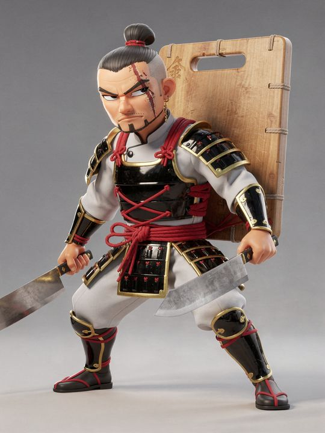
Approved plateThis plate set the roster standard for proportion, palette and eyes.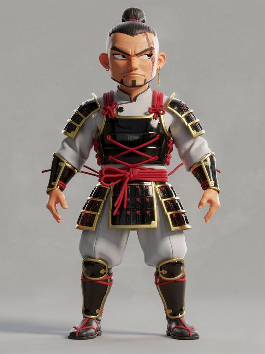
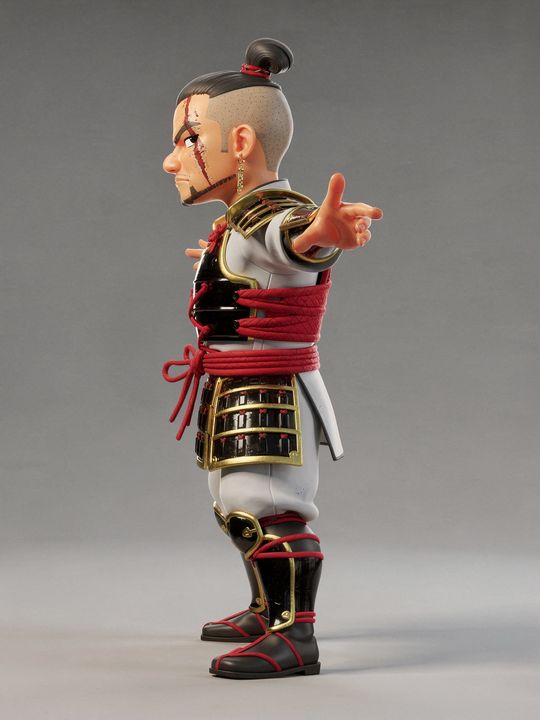
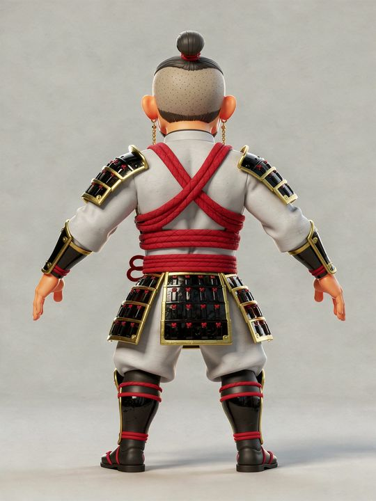
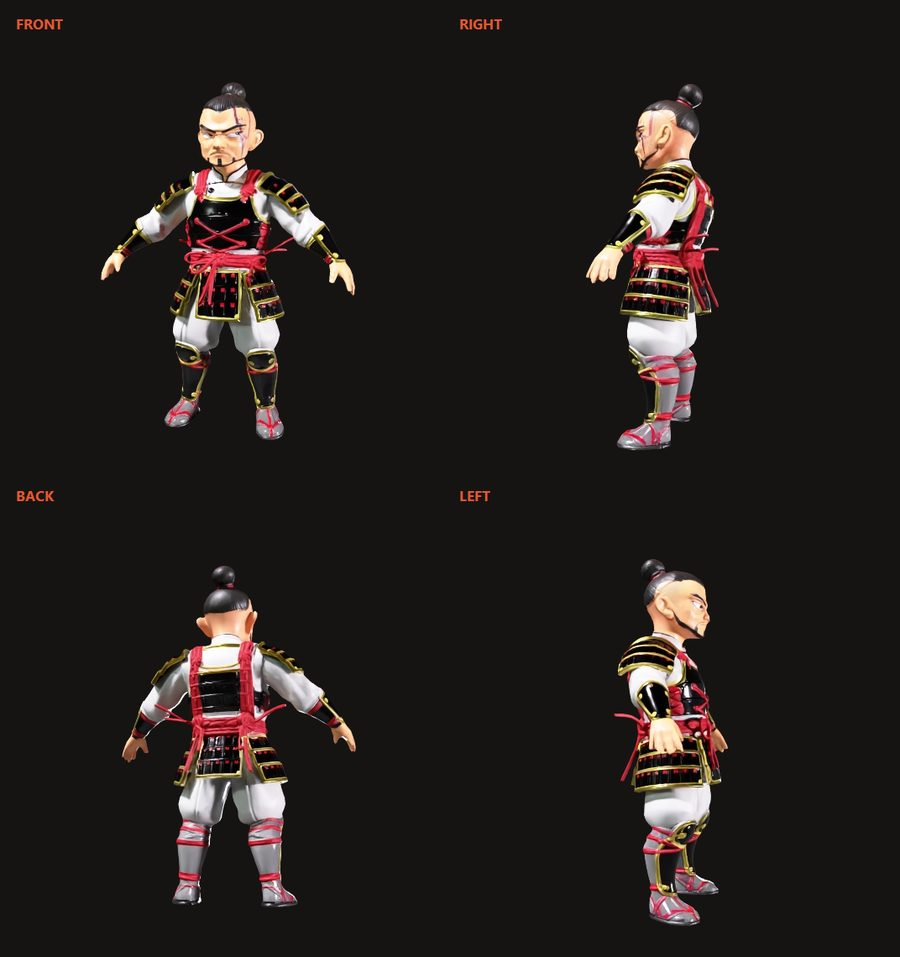
Textured meshGenerated with Meshy, then remeshed to a game budget with a 1k packed-ORM texture set.Screen captures from the Unreal animation editor, recorded straight off the editor with no camera or render setup, so you see the working tool. This is the rigged Samurai Chef running his gameplay cycles.


The sword droops a little these days. It happens to the best of us.
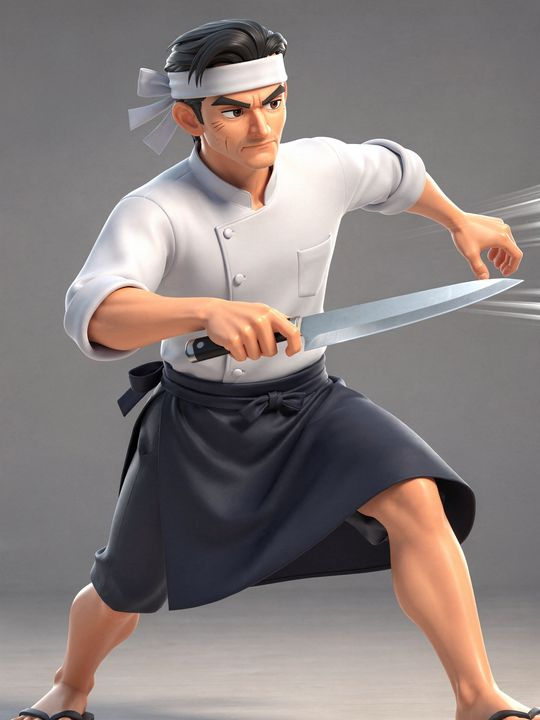
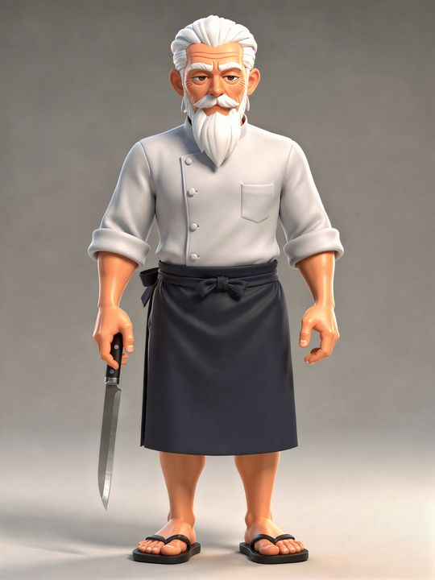
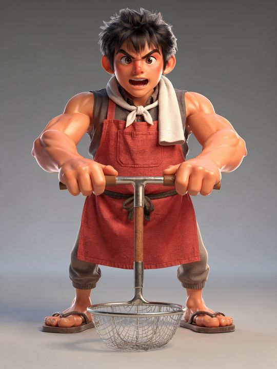
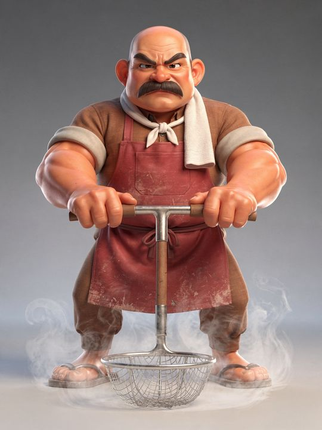
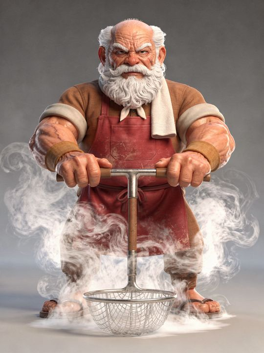
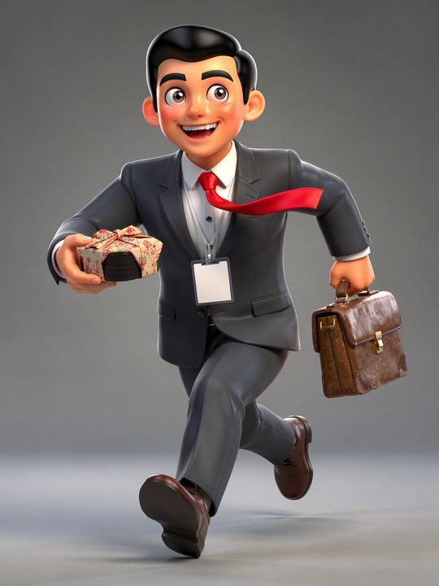
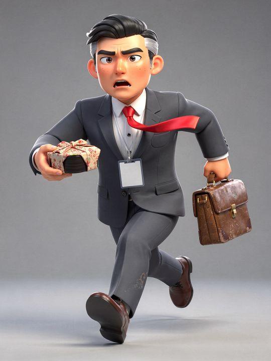
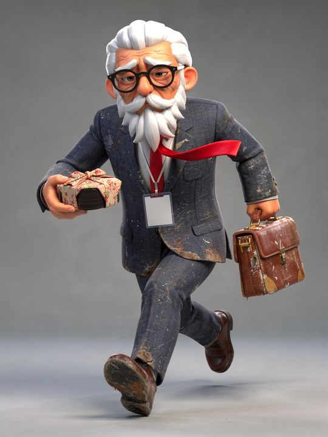
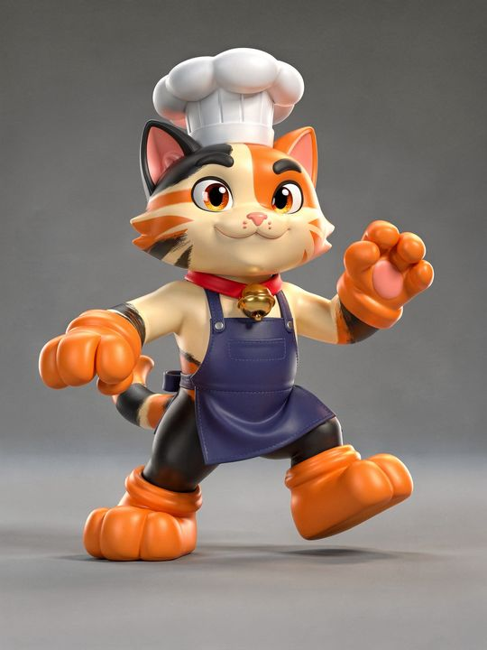
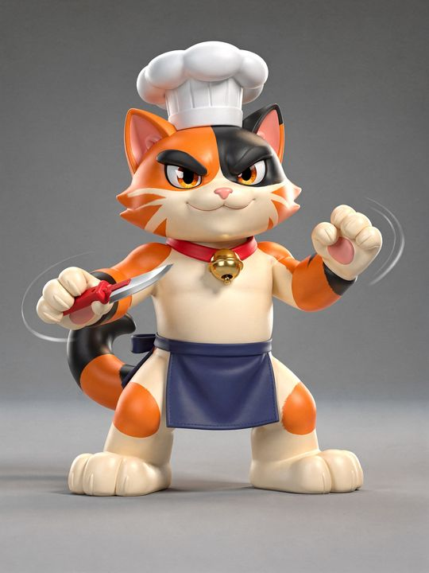
Tools: Higgsfield (FLUX.2) for plates and turnarounds · Meshy for multi-image 3D, remeshing and rigging · Unreal Engine 5.8 · Claude Code with unreal-mcp for editor automation